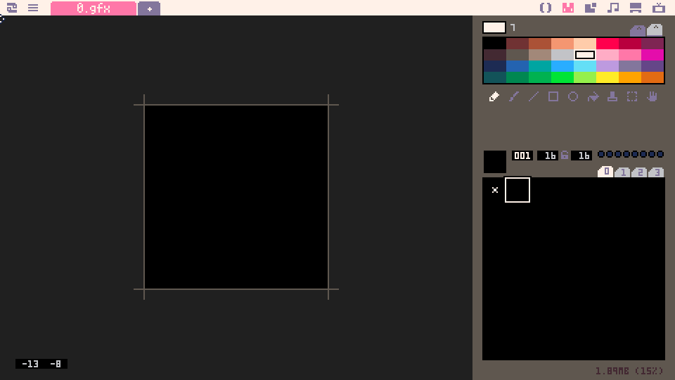
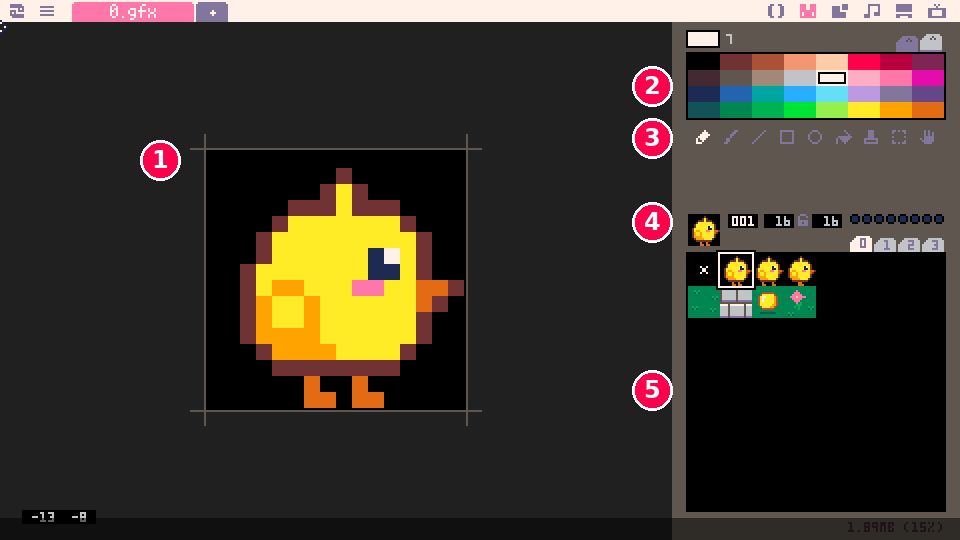
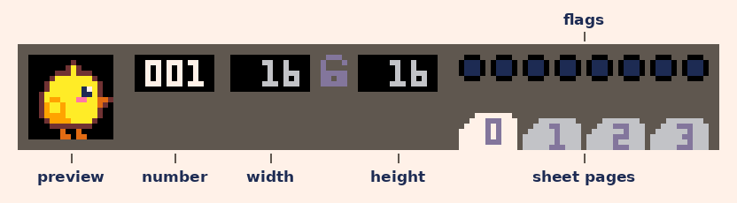
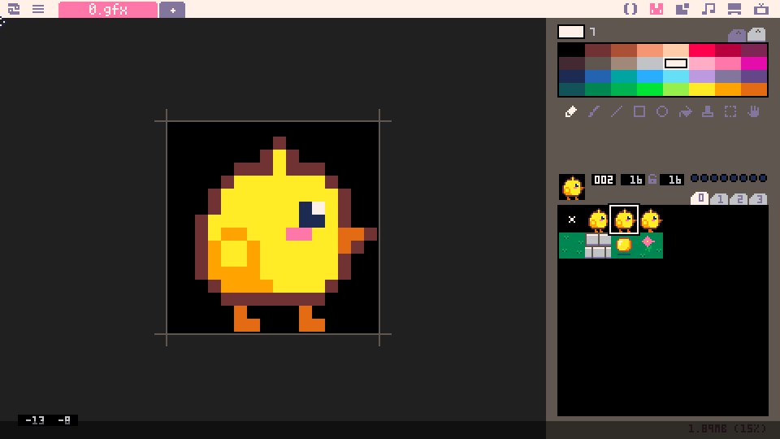

demotron / beginner basics / 09
Sprites
The sprite editor, drawing a character, putting it on screen with spr, flipping, a walking animation and transparency.
Shapes and sprites
So far everything we've drawn has been shapes: circles, rectangles, lines. Shapes go a long way, but a game soon wants a hero with eyes and feet, a coin that shines, a wall made of bricks. Those are drawn by hand, pixel by pixel, as small pictures called sprites.
Picotron has a sprite editor built in, so we can draw sprites and use them in code without leaving it. In this lesson we draw a character, put it on screen with one line of code, make it face the way it walks, give it a two-frame walk, and find out why some of its pixels are see-through.
Every demo here uses a chick we drew for the lesson, but the idea is that you draw your own. Wherever the lesson says "sprite 1", put your character in sprite 1, and the same code draws yours.
The sprite editor
Click the sprites icon at the top right of the screen, the second one along, just after the code editor's (). In a brand new cartridge the sprite editor looks like this:

The big black square is sprite 1, empty and ready to draw in. Here's the same editor with our chick in it, and its parts numbered:

- The canvas, where you draw. It shows the sprite you're working on, blown up big enough to see every pixel.
- The palette, the colours to draw with. Click one to pick it. The box above the palette shows the picked colour, and the number next to it is that colour's number, the same number
clsandcircfilltake. - The tools. From the left: pencil, brush, line, rectangle, circle, fill, stamp, select and pan (the hand).
- The sprite's details: a small preview, its number and its size.
- The sprite sheet: all the sprites, eight to a row. Click any square to work on that sprite.
Here's the row of details up close:

The number is the one that matters, because it's how our code finds the picture. Numbers count from 0 in the sheet's top-left corner and go across each row, so the top row is sprites 0 to 7 and the next row starts at 8. The width and height are the sprite's size: 16 by 16 pixels unless we change them.
The sheet shows 64 sprites at a time, and the tabs marked 0 to 3 switch between four pages of them: page 0 holds sprites 0 to 63, page 1 holds 64 to 127, and so on, up to 255. The row of eight dots is the sprite's flags, which Basics 10 puts to work.
Sprite 0 has a small white x in it. Picotron puts that there in every new cartridge, and it's best left alone, with our drawings starting at sprite 1. (Maps treat sprite 0 as "no tile here", so a picture in sprite 0 would never show up on a map; Basics 10 has the details.) The editor opens on sprite 1.
Drawing a sprite
The pencil is already picked, so pick a colour and click or drag on the canvas to draw. A few more things save time:
- Fill (the paint bucket) floods an area of one colour with the colour you've picked. It's the quickest way to colour in a body once its outline is drawn.
- Right-click any pixel on the canvas to pick up its colour, whichever tool is selected. It saves hunting around the palette.
- Ctrl + Z undoes the last change, and Ctrl + Y redoes it. Undo goes back as far as you like.
- Hold Space and drag to move the canvas around.
To rub out a pixel, draw over it with colour 0, the black square in the palette's top-left corner. The section on transparency, near the end, explains why that works as an eraser.
16 by 16 pixels is enough for a character with a face. Start with a simple outline, fill it in, and add one or two details, such as an eye. Here's our chick, in sprite 1:
Sprites are part of the cartridge, kept in a file called 0.gfx (the name on the editor's tab), so saving the cartridge (Getting Started showed how) saves them with it. There's no need to save before running, though: Ctrl + R always runs the cartridge with the latest drawing.
spr
Here's the program from Basics 4 that steers a player around with the arrow keys. The change is at the bottom: instead of a circle, it draws sprite 1. (It also starts at a slightly different spot, explained below, and clears the screen to green.)
1x, y = 232, 127
2
3function _update()
4 if btn(0) then x -= 2 end
5 if btn(1) then x += 2 end
6 if btn(2) then y -= 2 end
7 if btn(3) then y += 2 end
8end
9
10function _draw()
11 cls(3)
12 spr(1, x, y)
13endspr(1, x, y) draws sprite 1 at x, y. The first number is the sprite number from the editor, and it's the only thing that tells the code which picture we mean. Draw something in sprite 1 and this code draws it; draw something else there and the same code draws that instead.
Paste it into the code editor and press Ctrl + R, and your character moves around the screen. Here it is with our chick:
There's one difference from the circle. circfill(x, y, ...) puts the circle's centre at x, y, but spr puts the sprite's top-left corner there. A 16 by 16 sprite at 232, 127 covers the pixels from 232, 127 to 247, 142, which is why we start at 232 rather than 240: it puts the middle of the sprite near the middle of the screen.
The chick also looks small. Picotron's screen is 480 pixels wide, so a 16 pixel sprite is about a thirtieth of it. That's normal for a Picotron game, and it leaves plenty of room for a world to explore.
Flipping
Our chick faces right even while it walks left, which looks wrong. We could draw a second sprite facing left, but there's no need: spr can flip the one we have.
1x, y = 232, 127
2left = false
3
4function _update()
5 if btn(0) then
6 x -= 2
7 left = true
8 end
9 if btn(1) then
10 x += 2
11 left = false
12 end
13 if btn(2) then y -= 2 end
14 if btn(3) then y += 2 end
15end
16
17function _draw()
18 cls(3)
19 spr(1, x, y, left)
20endspr takes two more values after x and y: flip_x and flip_y. When flip_x is true, the sprite is drawn mirrored left to right. When it's false (or missing, as before), it's drawn the way it was drawn in the editor.
The obvious way to choose is to ask btn(0) every frame and flip while left is held. That breaks as soon as the key comes up: with no key held, btn can't tell us which way the chick was going, so it would snap back to facing right. So we keep a variable, left, that remembers which way the chick faces. Pressing left sets it to true and pressing right sets it back to false. Up and down don't touch it, and neither does letting go of the keys, so the chick keeps facing whichever way it last walked.
if btn(0) now has more than one line inside it. Everything between then and its end runs when the button is held.
This is why I draw characters facing right: then flip_x = true always means "facing left", which is easy to remember.
Animation
A character that glides along with its feet still looks like a cut-out. Animation is just a few pictures shown one after another, quickly, so we give the chick two more: sprite 2 with one foot forward and sprite 3 with the other.
Start each one from a copy of the character. Click sprite 1 in the sheet and press Ctrl + C to copy it, then click sprite 2 and press Ctrl + V to paste. Do the same for sprite 3, then redraw the feet in each one. (Q and W step to the previous and next sprite, which is handy for flicking between frames to compare them.) Here's our sprite 2:

In the code, the chick swaps between sprites 2 and 3 while it's moving, and goes back to sprite 1, standing still, when it stops.
1x, y = 232, 127
2left = false
3frame = 1
4
5function _update()
6 moving = false
7 if btn(0) then
8 x -= 2
9 left = true
10 moving = true
11 end
12 if btn(1) then
13 x += 2
14 left = false
15 moving = true
16 end
17 if btn(2) then y -= 2 moving = true end
18 if btn(3) then y += 2 moving = true end
19
20 if moving then
21 -- 2, 3, 2, 3... eight changes a second
22 frame = 2 + flr(t() * 8) % 2
23 else
24 frame = 1
25 end
26end
27
28function _draw()
29 cls(3)
30 spr(frame, x, y, left)
31endThe sprite number doesn't have to be written straight into spr. It can be a variable, frame, and that's what makes animation possible.
Each frame, moving starts out false, and any arrow that's held sets it to true. Then we pick the picture. The line that does the work is frame = 2 + flr(t() * 8) % 2, which reads best from the inside out:
t()is the number of seconds since the program started (Basics 2), sot() * 8counts up eight times as fast: 8 every second.flrrounds it down to a whole number: 0, 1, 2, 3, 4 ... with each number lasting an eighth of a second.% 2is the remainder after dividing by 2 (Basics 3), which turns that count into 0, 1, 0, 1, 0, 1 ...2 +turns that into 2, 3, 2, 3, 2, 3 ...: exactly our two walking sprites.
The 8 sets how fast the feet move. Try a few other numbers in your own copy: too slow and the chick tiptoes; too fast and its feet are a blur.
Transparency
Look closely at the chick in any of the demos above. Its sprite is a 16 by 16 square, but there's no black square around it, only the green background. That's because spr skips every pixel of colour 0. Colour 0 is transparent: wherever a sprite has it, whatever was already on the screen shows through. It's also why drawing with colour 0 works as an eraser in the sprite editor.
palt (short for "palette transparency") changes which colours are skipped. Here are three chicks drawn over stripes, so we can see exactly which pixels get drawn:
1function _draw()
2 cls(1)
3 -- stripes, so we can see what's behind
4 for i = 0, 29 do
5 rectfill(i * 16, 0, i * 16 + 7, 269, 13)
6 end
7
8 -- normally, colour 0 isn't drawn
9 spr(1, 112, 112)
10
11 -- now colour 0 is drawn, like any other
12 palt(0, false)
13 spr(1, 232, 112)
14
15 -- and colour 10 (yellow) isn't
16 palt(0, true)
17 palt(10, true)
18 spr(1, 352, 112)
19
20 -- back to normal for next frame
21 palt()
22
23 print("normal", 105, 136, 7)
24 print("palt(0, false)", 205, 136, 7)
25 print("palt(10, true)", 325, 136, 7)
26endpalt(colour, true) makes a colour transparent and palt(colour, false) makes it solid again. The setting sticks, for every sprite drawn after it, until it's changed, so the last line puts things back with palt(). That resets to normal: colour 0 transparent and every other colour solid.
The left chick is drawn normally. The middle one has colour 0 made solid, so its black background box appears. The right one has colour 0 transparent again, but yellow (colour 10) transparent too, so only the chick's outline, eye, cheek, beak and feet are left.
This matters when drawing. A character outlined in colour 0 loses its outline in the game. Outline with a dark colour that isn't 0, such as dark blue (colour 1) or a dark brown, and keep colour 0 for the space around the character.
Putting it together
In this lesson we added:
- the sprite editor, and sprite numbers counting from 0 across the sheet
spr(n, x, y), which draws a sprite with its top-left corner atx,yflip_x, and a variable that remembers which way the character faces- a walking animation, by choosing the sprite number from
t() - colour 0 as transparent, and
paltto change which colours are skipped
Next, Basics 10 lays sprites out as tiles in the map editor and builds a level for the chick to walk around.
Try this
- Draw an enemy in sprite 4 and make it chase your character: each frame, move its
xa little towards the player'sx, and itsytowards the player'sy. You'll need its own two variables, and aniffor each direction (Basics 5). Can you make it face the way it's going too? - In the first demo, change each
2in_updateto0.5, and printxon the screen. Before you run it, predict: whenxis 232.5, where willsprdraw the sprite? Watch the chick and the number together, and work out whatsprdoes with the part after the dot. pal,palt's cousin, swaps one colour for another as you draw:pal(10, 12)beforesprturns every yellow pixel blue. Make a second, differently coloured player from the same sprite. What happens to the first player if you forget to put the colours back withpal()?- Give your character four directions: draw it facing up and facing down in sprites 5 and 6, and choose the sprite by the last arrow pressed. Why do you only need to draw three directions, and not four?
Built with Picotron 0.3.0d.